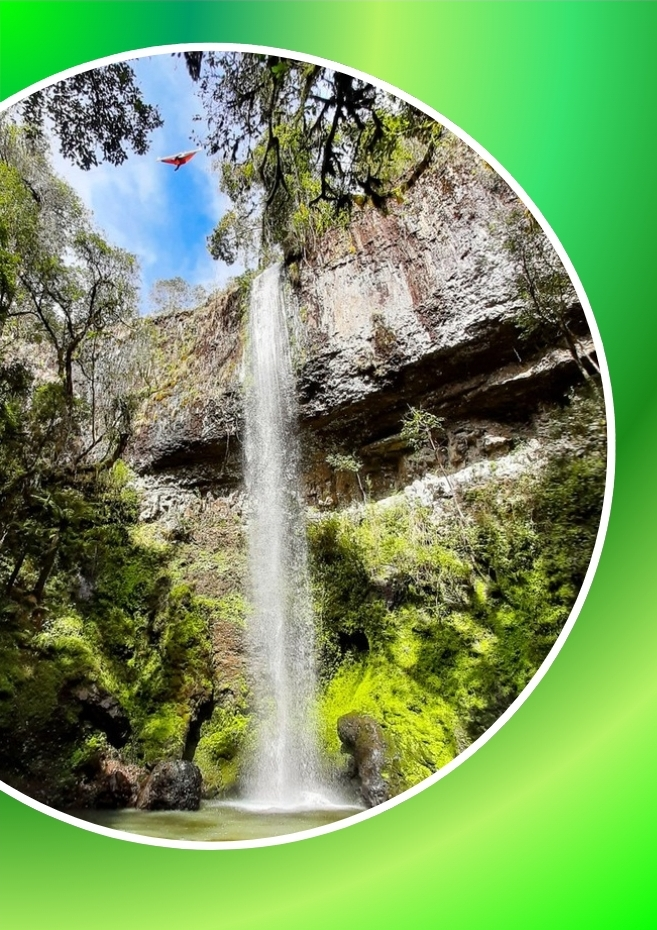
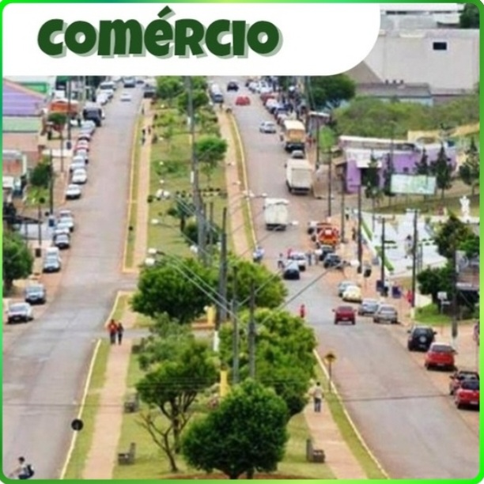
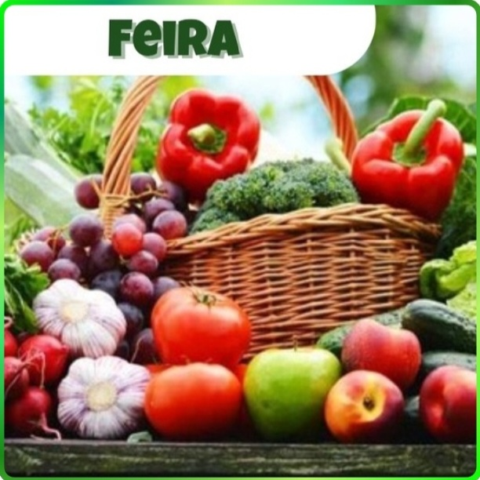

Festejando a conexão campo-cidade:
Há muitas décadas atrás, o campo e a cidade começaram a se conectar e integrar. Esta integração vem se intensificando, e transformando o cotidiano das pessoas. No estado do Paraná isso pode ser notado em diversas situações, tanto na agricultura, nos comércios, na tecnologia, no turismo, e até mesmo na história e cultura do estado. E é essa conexão que deve ser festejada, pois é ela que faz com que o Paraná e o Brasil se desenvolvam e cresçam. Fonte: O autor.
Onde tudo se conecta?


Conectados nos mais variados ambientes...

